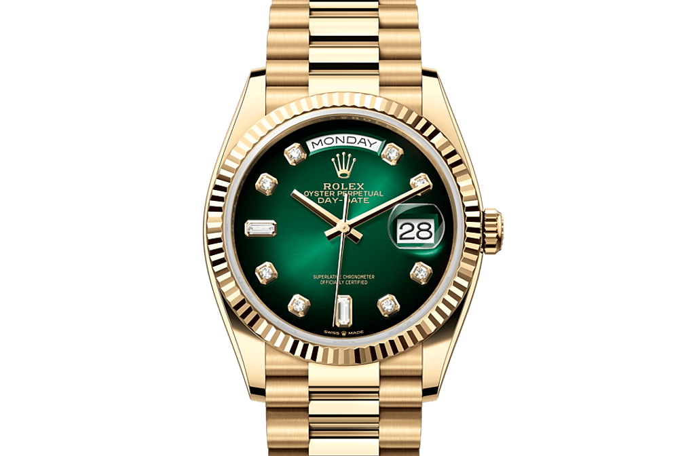

Čas pro vaši eleganci
S našimi hodinkami získáte:
Luxus
spolehlivost
a ponětí o čase
1908
Rolex 1908: luxusní hodinky s precizním designem a robustní konstrukcí. Elegance spojená s švýcarskou přesností.
Explorer
Rolex Explorer: odolné, elegantní hodinky s nerezovým pouzdrem, safírovým sklem a černým číselníkem s luminiscenčními indexy. Ideální pro dobrodružství.
Daydate
Rolex Day-Date jsou symbolem luxusu, technické dokonalosti a prestiže, oblíbené mezi světovými vůdci.
M128238
Rolex Day-Date M128238 je luxusní hodinky s pouzdrem a náramkem z 18karátového žlutého zlata. Mají černý číselník s luminiscenčními indexy, datem a okénkem Cyclops. Pohání je kalibr 3255 s automatickým nátahem a mají vodotěsnost do 100 metrů.


Pružinka
Pružinka v hodinkách je klíčovou součástí, která umožňuje plynulý pohyb ručiček. Je umístěna uvnitř mechanismu hodinek a její pružnost zajistí, že se ručičky vracejí na své místo po každém pohybu. Pružinka je obvykle vyrobena z kovu, jako je ocel nebo mosaz, a je navržena tak, aby vydržela opakované namáhání během dlouhého provozu hodinek.
.
Ozubená kolečka
Ozubená kolečka jsou klíčovou součástí mechanismu hodinek, která umožňuje přesné měření času. Jsou navržena tak, aby se zuby navzájem zapadaly a přenášely pohyb mezi různými částmi strojku. Tento mechanismus zajišťuje, že ručičky plynule a přesně pohybují, což umožňuje přesný a spolehlivý chod hodinek.
.
Spona
Spona hodinek je mechanismus pro uzavření a zajištění náramku kolem zápěstí. Existují různé typy, včetně tradiční přezky, deployantní spony a moderních variant s rychlým uvolněním. Každý typ má své vlastní výhody v pohodlí, bezpečnosti a estetice.
Plně přisbůsobivé
Přizpůsobivé hodinky spojují špičkovou technologii s elegantním designem, ideální volba pro moderní životní styl.
V jednoduchosti je krása
Jednoduché hodinky jsou elegantní a funkční doplněk pro každodenní nošení. S minimalistickým designem a čistými čísly na číselníku poskytují přesný časový údaj bez zbytečných funkcí.

Follow us: